Classificazione delle Immagini

Introduzione
Mentre iniziamo i nostri studi sul machine learning embedded o TinyML, è impossibile ignorare l’impatto trasformativo della Computer Vision (CV) e dell’Intelligenza Artificiale (IA) nelle nostre vite. Queste due discipline interconnesse ridefiniscono ciò che le macchine possono percepire e realizzare, dai veicoli autonomi e dalla robotica all’assistenza sanitaria e alla sorveglianza.
Sempre di più, ci troviamo di fronte a una rivoluzione dell’intelligenza artificiale (IA) in cui, come affermato da Gartner, Edge AI ha un potenziale di impatto molto elevato, ed è ora!
Nel “centro” del Radar c’è la Edge Computer Vision, e quando parliamo di Machine Learning (ML) applicato alla visione, la prima cosa che viene in mente è la Classificazione delle immagini, una specie di “Hello World” di ML!
Questo esercizio esplorerà un progetto di computer vision che utilizza Convolutional Neural Network (CNN) [Reti Neurali Convoluzionali] per la classificazione delle immagini in tempo reale. Sfruttando il robusto ecosistema di TensorFlow, implementeremo un modello MobileNet pre-addestrato e lo adatteremo per il “deployment” edge. L’attenzione sarà rivolta all’ottimizzazione del modello per un’esecuzione efficiente su hardware con risorse limitate senza sacrificare l’accuratezza.
Utilizzeremo tecniche come la quantizzazione e la potatura per ridurre il carico computazionale. Alla fine di questo tutorial, si avrà un prototipo funzionante in grado di classificare le immagini in tempo reale, il tutto in esecuzione su un sistema embedded a basso consumo basato sulla scheda Arduino Nicla Vision.
Visione Artificiale
In sostanza, la visione artificiale consente alle macchine di interpretare e prendere decisioni sulla base di dati visivi provenienti dal mondo esterno, imitando sostanzialmente la capacità del sistema ottico umano. Al contrario, l’intelligenza artificiale è un campo più ampio che comprende il machine learning [apprendimento automatico], elaborazione del linguaggio naturale e robotica, tra le altre tecnologie. Quando si introducono algoritmi di IA nei progetti di visione artificiale, si potenzia la capacità del sistema di comprendere, interpretare e reagire agli stimoli visivi.
Quando si parla di progetti di visione artificiale applicati a dispositivi embedded, le applicazioni più comuni che vengono in mente sono Classificazione delle Immagini e Rilevamento degli Oggetti.
Entrambi i modelli possono essere implementati su dispositivi minuscoli come Arduino Nicla Vision e utilizzati in progetti reali. In questo capitolo, parleremo della classificazione delle immagini.
Obiettivo del Progetto di Classificazione delle Immagini
Il primo passo in qualsiasi progetto ML è definire l’obiettivo. In questo caso, è rilevare e classificare due oggetti specifici presenti in un’immagine. Per questo progetto, utilizzeremo due piccoli giocattoli: un robot e un piccolo pappagallo brasiliano (chiamato Periquito). Inoltre, raccoglieremo immagini di un background in cui quei due oggetti sono assenti.

Raccolta Dati
Una volta definito l’obiettivo del progetto di Machine Learning, il passaggio successivo e più cruciale è la raccolta del set di dati. Si può utilizzare Edge Impulse Studio, l’IDE OpenMV che abbiamo installato o persino il proprop telefono per l’acquisizione delle immagini. Qui, utilizzeremo l’IDE OpenMV per questo.
Raccolta del Dataset con OpenMV IDE
Per prima cosa, si crea sul computer una cartella in cui verranno salvati i dati, ad esempio “data”. Quindi, su OpenMV IDE, si va in Tools > Dataset Editor e si seleziona New Dataset per avviare la raccolta di dati:
L’IDE chiederà di aprire il file in cui verranno salvati i dati e di scegliere la cartella “data” che è stata creata. Notare che appariranno nuove icone sul pannello di sinistra.
Utilizzando l’icona in alto (1), si inserisce il nome della prima classe, ad esempio “periquito”:
Eseguendo dataset_capture_script.py e cliccando sull’icona della fotocamera (2), inizierà l’acquisizione delle immagini:
Ripetere la stessa procedura con le altre classi
Suggeriamo circa 60 immagini da ogni categoria. Provare ad acquisire con diverse angolazioni, sfondi e condizioni di luce.
Le immagini archiviate utilizzano una dimensione del fotogramma QVGA di 320x240 e RGB565 (formato pixel colore).
Dopo aver acquisito il dataset, si chiude il Tool Dataset Editor su Tools > Dataset Editor.
Sul computer, si finirà con un set di dati che contiene tre classi: periquito, robot e background.
Si deve tornare a Edge Impulse Studio e caricare il set di dati nel progetto.
Addestramento del modello con Edge Impulse Studio
Useremo Edge Impulse Studio per addestrare il nostro modello. Inserire le credenziali del proprio account e creare un nuovo progetto:
Qui si può clonare un progetto simile: NICLA-Vision_Image_Classification.
Il Dataset
Utilizzando EI Studio (o Studio), esamineremo quattro passaggi principali per avere il nostro modello pronto per l’uso sulla scheda Nicla Vision: Dataset, Impulse, Tests e Deploy (su Edge Device, in questo caso, la NiclaV).
Per quanto riguarda il Dataset, è essenziale sottolineare che il nostro Dataset originale, acquisito con OpenMV IDE, sarà suddiviso in Training, Validation e Test. Il Test Set sarà suddiviso dall’inizio e una parte sarà riservata per essere utilizzata solo nella fase di Test dopo l’addestramento. Il Validation Set sarà utilizzato durante l’addestramento.
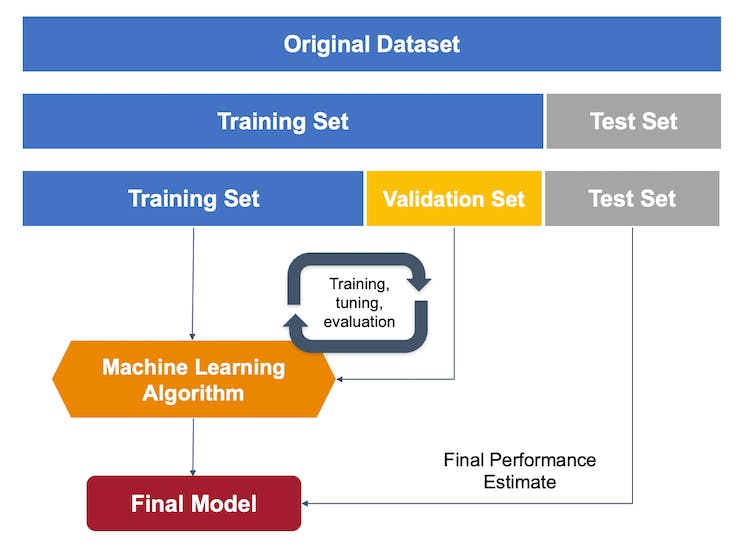
Su Studio, nella scheda Data acquisition e nella sezione UPLOAD DATA, si caricano i file delle categorie scelte dal computer:
Lasciare in Studio la suddivisione del dataset originale in train and test e scegliere l’etichetta relativa a quei dati specifici:
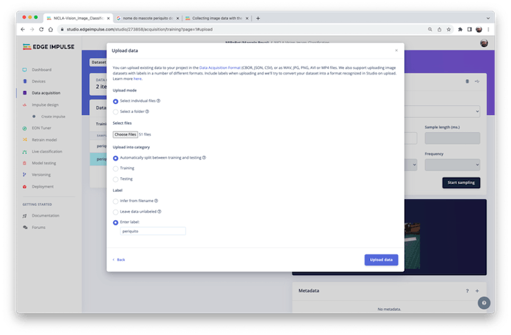
Ripetere la procedura per tutte e tre le classi. Alla fine, si vedranno “dati grezzi” in Studio:
Studio consente di esplorare i dati, mostrando una vista completa di tutti i dati nel progetto. Si possono cancellare, ispezionare o modificare le etichette cliccando sui singoli elementi di dati. Nel nostro caso, un progetto molto semplice, i dati sembrano OK.

Impulse Design
In questa fase, dovremmo definire come:
Pre-elaborare i nostri dati, il che consiste nel ridimensionare le singole immagini e determinare la
profondità di coloreda utilizzare (RGB o scala di grigi) eSpecificare un modello, in questo caso, sarà il
Transfer Learning (Images)per mettere a punto un modello di classificazione delle immagini MobileNet V2 pre-addestrato sui nostri dati. Questo metodo funziona bene anche con set di dati di immagini relativamente piccoli (circa 150 immagini nel nostro caso).
Transfer Learning con MobileNet offre un approccio semplificato all’addestramento del modello, che è particolarmente utile per ambienti con risorse limitate e progetti con dati etichettati limitati. MobileNet, noto per la sua architettura leggera, è un modello pre-addestrato che ha già appreso funzionalità preziose da un ampio set di dati (ImageNet).

Sfruttando queste funzionalità apprese, si può addestrare un nuovo modello per il compito specifico con meno dati e risorse computazionali e tuttavia ottenere una precisione competitiva.

Questo approccio riduce significativamente i tempi di addestramento e i costi computazionali, rendendolo ideale per la prototipazione rapida e l’implementazione su dispositivi embedded in cui l’efficienza è fondamentale.
Si va alla scheda Impulse Design e si crea l’impulse, definendo una dimensione dell’immagine di 96x96 e schiacciandola (forma quadrata, senza ritaglio). Si seleziona Image e i blocchi Transfer Learning. Si salva l’Impulse.
Pre-elaborazione delle Immagini
Tutte le immagini QVGA/RGB565 in ingresso verranno convertite in 27.640 feature (96x96x3).
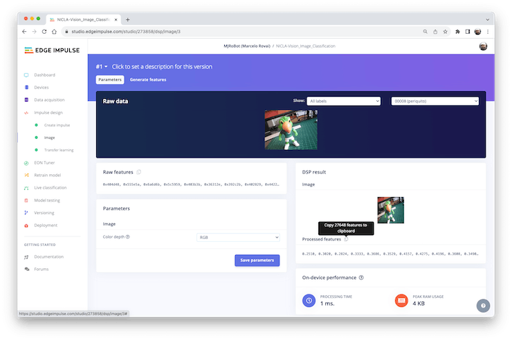
Si preme [Save parameters] e Generate all features:
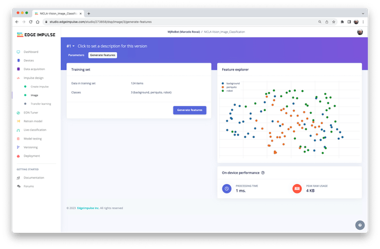
Progettazione del Modello
Nel 2007, Google ha introdotto MobileNetV1, una famiglia di reti neurali per la visione artificiale di uso generale progettate pensando ai dispositivi mobili per supportare la classificazione, il rilevamento e altro ancora. Le MobileNet sono modelli piccoli, a bassa latenza e a basso consumo, parametrizzati per soddisfare i vincoli di risorse di vari casi d’uso. Nel 2018, Google ha lanciato MobileNetV2: Inverted Residuals and Linear Bottlenecks.
MobileNet V1 e MobileNet V2 mirano all’efficienza mobile e alle applicazioni di visione embedded, ma differiscono per complessità architettonica e prestazioni. Mentre entrambi utilizzano convoluzioni separabili in profondità per ridurre i costi computazionali, MobileNet V2 introduce Inverted Residual Blocks e Linear Bottlenecks per migliorare le prestazioni. Queste nuove funzionalità consentono a V2 di acquisire funzionalità più complesse utilizzando meno parametri, rendendolo più efficiente dal punto di vista computazionale e generalmente più accurato rispetto al suo predecessore. Inoltre, V2 impiega un’attivazione non lineare nello layer di espansione intermedio. Utilizza ancora un’attivazione lineare per il layer del bottleneck [collo di bottiglia], una scelta di progettazione che si è rivelata utile per preservare informazioni importanti attraverso la rete. MobileNet V2 offre un’architettura ottimizzata per una maggiore accuratezza ed efficienza e verrà utilizzata in questo progetto.
Sebbene l’architettura di base di MobileNet sia già minuscola e abbia una bassa latenza, molte volte, un caso d’uso o un’applicazione specifica potrebbe richiedere che il modello sia ancora più piccolo e veloce. MobileNets introduce un parametro semplice α (alfa) chiamato moltiplicatore di larghezza per costruire questi modelli più piccoli e meno costosi dal punto di vista computazionale. Il ruolo del moltiplicatore di larghezza α è quello di assottigliare una rete in modo uniforme a ogni layer.
Edge Impulse Studio può utilizzare sia MobileNetV1 (immagini 96x96) che V2 (immagini 96x96 o 160x160), con diversi valori di α (da 0,05 a 1,0). Ad esempio, si otterrà la massima accuratezza con V2, immagini 160x160 e α=1,0. Naturalmente, c’è un compromesso. Maggiore è la precisione, più memoria (circa 1,3 MB di RAM e 2,6 MB di ROM) sarà necessaria per eseguire il modello, il che implica una maggiore latenza. L’ingombro minore sarà ottenuto all’altro estremo con MobileNetV1 e α=0,10 (circa 53,2 K di RAM e 101 K di ROM).
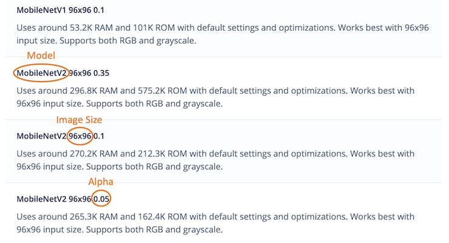
Per questo progetto utilizzeremo MobileNetV2 96x96 0.1, con un costo di memoria stimato di 265,3 KB in RAM. Questo modello dovrebbe andare bene per Nicla Vision con 1 MB di SRAM. Nella scheda Transfer Learning, si seleziona questo modello:
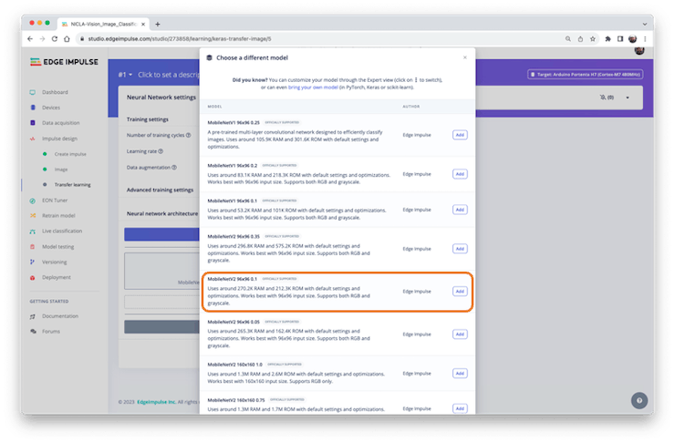
Addestramento del Modello
Un’altra tecnica preziosa da utilizzare con il Deep Learning è la Data Augmentation. Il “data augmentation” è un metodo per migliorare l’accuratezza dei modelli di apprendimento automatico mediante la creazione di dati artificiali aggiuntivi. Un sistema di Data Augmentation apporta piccole modifiche casuali ai dati di training (ad esempio capovolgendo, ritagliando o ruotando le immagini).
Guardando “sotto il cofano”, qui si può vedere come Edge Impulse implementa una policy di Data Augmentation sui dati:
# Implements the data augmentation policy
def augment_image(image, label):
# Flips the image randomly
image = tf.image.random_flip_left_right(image)
# Increase the image size, then randomly crop it down to
# the original dimensions
resize_factor = random.uniform(1, 1.2)
new_height = math.floor(resize_factor * INPUT_SHAPE[0])
new_width = math.floor(resize_factor * INPUT_SHAPE[1])
image = tf.image.resize_with_crop_or_pad(image, new_height, new_width)
image = tf.image.random_crop(image, size=INPUT_SHAPE)
# Vary the brightness of the image
image = tf.image.random_brightness(image, max_delta=0.2)
return image, labelL’esposizione a queste variazioni durante l’addestramento può aiutare a impedire al modello di prendere scorciatoie “memorizzando” indizi superficiali nei dati di addestramento, il che significa che potrebbe riflettere meglio i pattern profondi in esame nel set di dati.
L’ultimo layer del nostro modello avrà 12 neuroni con un dropout del 15% per prevenire l’overfitting. Ecco il risultato del Training:

Il risultato è eccellente, con 77 ms di latenza, che dovrebbero tradursi in 13 fps (frame al secondo) durante l’inferenza.
Test del Modello
Ora, si dovrebbe mettere da parte il set di dati all’inizio del progetto ed eseguire il modello addestrato usandolo come input:
Il risultato è, ancora una volta, eccellente.
Distribuzione del modello
A questo punto, possiamo distribuire il modello addestrato come .tflite e usare l’IDE OpenMV per eseguirlo usando MicroPython, oppure possiamo distribuirlo come C/C++ o libreria Arduino.
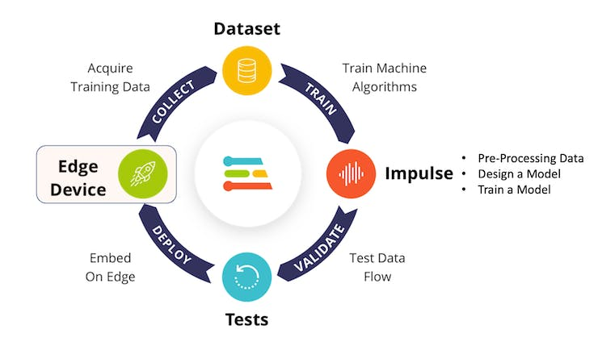
Libreria Arduino
Per prima cosa, distribuiamolo come Libreria Arduino:
Si dovrebbe installare la libreria come .zip sull’IDE Arduino ed eseguire lo sketch nicla_vision_camera.ino disponibile in Examples sotto il nome della libreria.
Notare che Arduino Nicla Vision ha, per default, 512KB di RAM allocati per il core M7 e altri 244 KB sullo spazio di indirizzamento dell’M4. Nel codice, questa allocazione è stata modificata in 288 kB per garantire che il modello verrà eseguito sul dispositivo (
malloc_addblock((void*)0x30000000, 288 * 1024);).
Il risultato è buono, con 86 ms di latenza misurata.
Ecco un breve video che mostra i risultati dell’inferenza:
OpenMV
È possibile distribuire il modello addestrato da utilizzare con OpenMV in due modi: come libreria e come firmware.
Come libreria vengono generati tre file: il modello .tflite addestrato, un elenco con etichette e un semplice script MicroPython che può effettuare inferenze utilizzando il modello.
Eseguire questo modello come .tflite direttamente in Nicla era impossibile. Quindi, possiamo sacrificare l’accuratezza utilizzando un modello più piccolo o distribuire il modello come Firmware OpenMV (FW). Scegliendo FW, Edge Impulse Studio genera modelli, librerie e framework ottimizzati necessari per effettuare l’inferenza. Esploriamo questa opzione.
Selezionare OpenMV Firmware nella scheda Deploy e premere [Build].
Sul computer si troverà un file ZIP. Lo si apre:
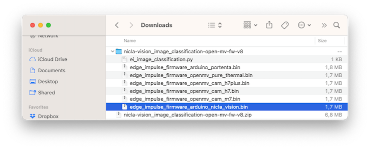
Si usa il tool Bootloader sull’IDE OpenMV per caricare il FW sulla board:
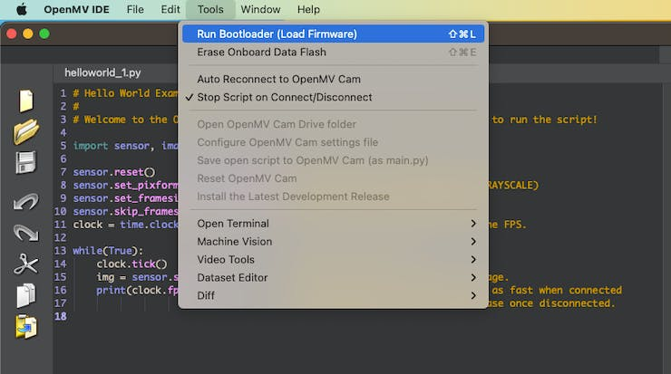
Si seleziona il file appropriato (.bin per Nicla-Vision):
Dopo aver completato il download, si preme OK:
Se un messaggio dice che il FW è “outdated” [obsoleto], NON ESEGUIRE L’AGGIORNAMENTO. Selezionare [NO].
Ora, si apre lo script ei_image_classification.py che è stato scaricato da Studio e il file .bin per Nicla.
Eseguirlo. Puntando la telecamera sugli oggetti che vogliamo classificare, il risultato dell’inferenza verrà visualizzato sul Serial Terminal.

Modifica del Codice per Aggiungere Etichette
Il codice fornito da Edge Impulse può essere modificato in modo da poter vedere, per motivi di test, il risultato dell’inferenza direttamente sull’immagine visualizzata sull’IDE OpenMV.
Caricare il codice da GitHub o modificalo come di seguito:
# Marcelo Rovai - NICLA Vision - Image Classification
# Adapted from Edge Impulse - OpenMV Image Classification Example
# @24Aug23
import sensor, image, time, os, tf, uos, gc
sensor.reset() # Reset and initialize the sensor.
sensor.set_pixformat(sensor.RGB565) # Set pxl fmt to RGB565 (or GRAYSCALE)
sensor.set_framesize(sensor.QVGA) # Set frame size to QVGA (320x240)
sensor.set_windowing((240, 240)) # Set 240x240 window.
sensor.skip_frames(time=2000) # Let the camera adjust.
net = None
labels = None
try:
# Load built in model
labels, net = tf.load_builtin_model('trained')
except Exception as e:
raise Exception(e)
clock = time.clock()
while(True):
clock.tick() # Starts tracking elapsed time.
img = sensor.snapshot()
# default settings just do one detection
for obj in net.classify(img,
min_scale=1.0,
scale_mul=0.8,
x_overlap=0.5,
y_overlap=0.5):
fps = clock.fps()
lat = clock.avg()
print("**********\nPrediction:")
img.draw_rectangle(obj.rect())
# This combines the labels and confidence values into a list of tuples
predictions_list = list(zip(labels, obj.output()))
max_val = predictions_list[0][1]
max_lbl = 'background'
for i in range(len(predictions_list)):
val = predictions_list[i][1]
lbl = predictions_list[i][0]
if val > max_val:
max_val = val
max_lbl = lbl
# Print label with the highest probability
if max_val < 0.5:
max_lbl = 'uncertain'
print("{} with a prob of {:.2f}".format(max_lbl, max_val))
print("FPS: {:.2f} fps ==> latency: {:.0f} ms".format(fps, lat))
# Draw label with highest probability to image viewer
img.draw_string(
10, 10,
max_lbl + "\n{:.2f}".format(max_val),
mono_space = False,
scale=2
)Qui si può vedere il risultato:
Notare che la latenza (136 ms) è quasi il doppio di quella che ottenuta direttamente con l’IDE Arduino. Questo perché stiamo usando l’IDE come interfaccia e anche il tempo di attesa per la fotocamera per essere pronta. Se avviamo il clock appena prima dell’inferenza:
La latenza scenderà a soli 71 ms.
NiclaV funziona a circa la metà della velocità quando è connesso all’IDE. Gli FPS dovrebbero aumentare una volta disconnessi.
Post-elaborazione con i LED
Quando lavoriamo con l’apprendimento automatico embedded, cerchiamo dispositivi che possano procedere continuamente con l’inferenza e il risultato, eseguendo un’azione direttamente sul mondo fisico e non visualizzando il risultato su un computer connesso. Per simulare ciò, accenderemo un LED diverso per ogni possibile risultato dell’inferenza.
Per ottenere ciò, dovremmo caricare il codice da GitHub o modificare l’ultimo codice per includere i LED:
# Marcelo Rovai - NICLA Vision - Image Classification with LEDs
# Adapted from Edge Impulse - OpenMV Image Classification Example
# @24Aug23
import sensor, image, time, os, tf, uos, gc, pyb
ledRed = pyb.LED(1)
ledGre = pyb.LED(2)
ledBlu = pyb.LED(3)
sensor.reset() # Reset and initialize the sensor.
sensor.set_pixformat(sensor.RGB565) # Set pixl fmt to RGB565 (or GRAYSCALE)
sensor.set_framesize(sensor.QVGA) # Set frame size to QVGA (320x240)
sensor.set_windowing((240, 240)) # Set 240x240 window.
sensor.skip_frames(time=2000) # Let the camera adjust.
net = None
labels = None
ledRed.off()
ledGre.off()
ledBlu.off()
try:
# Load built in model
labels, net = tf.load_builtin_model('trained')
except Exception as e:
raise Exception(e)
clock = time.clock()
def setLEDs(max_lbl):
if max_lbl == 'uncertain':
ledRed.on()
ledGre.off()
ledBlu.off()
if max_lbl == 'periquito':
ledRed.off()
ledGre.on()
ledBlu.off()
if max_lbl == 'robot':
ledRed.off()
ledGre.off()
ledBlu.on()
if max_lbl == 'background':
ledRed.off()
ledGre.off()
ledBlu.off()
while(True):
img = sensor.snapshot()
clock.tick() # Starts tracking elapsed time.
# default settings just do one detection.
for obj in net.classify(img,
min_scale=1.0,
scale_mul=0.8,
x_overlap=0.5,
y_overlap=0.5):
fps = clock.fps()
lat = clock.avg()
print("**********\nPrediction:")
img.draw_rectangle(obj.rect())
# This combines the labels and confidence values into a list of tuples
predictions_list = list(zip(labels, obj.output()))
max_val = predictions_list[0][1]
max_lbl = 'background'
for i in range(len(predictions_list)):
val = predictions_list[i][1]
lbl = predictions_list[i][0]
if val > max_val:
max_val = val
max_lbl = lbl
# Print label and turn on LED with the highest probability
if max_val < 0.8:
max_lbl = 'uncertain'
setLEDs(max_lbl)
print("{} with a prob of {:.2f}".format(max_lbl, max_val))
print("FPS: {:.2f} fps ==> latency: {:.0f} ms".format(fps, lat))
# Draw label with highest probability to image viewer
img.draw_string(
10, 10,
max_lbl + "\n{:.2f}".format(max_val),
mono_space = False,
scale=2
)Ora, ogni volta che una classe ottiene un risultato superiore a 0,8, il LED corrispondente si accenderà:
Led Rosso 0n: incerto (nessuna classe supera 0,8)
Led Green 0n: Periquito > 0.8
Led Blue 0n: Robot > 0.8
Tutti i LED spenti: Sfondo > 0.8
Ecco il risultato:
Più in dettaglio
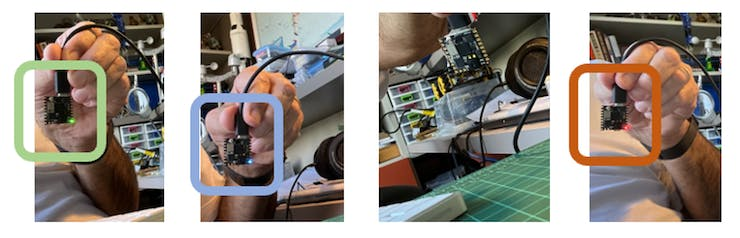
Classificazione delle immagini Benchmark (non ufficiale)
Diverse schede di sviluppo possono essere utilizzate per l’apprendimento automatico embedded (TinyML) e le più comuni per le applicazioni di Computer Vision (consumo energetico basso) sono ESP32 CAM, Seeed XIAO ESP32S3 Sense, Arduino Nicla Vison e Arduino Portenta.
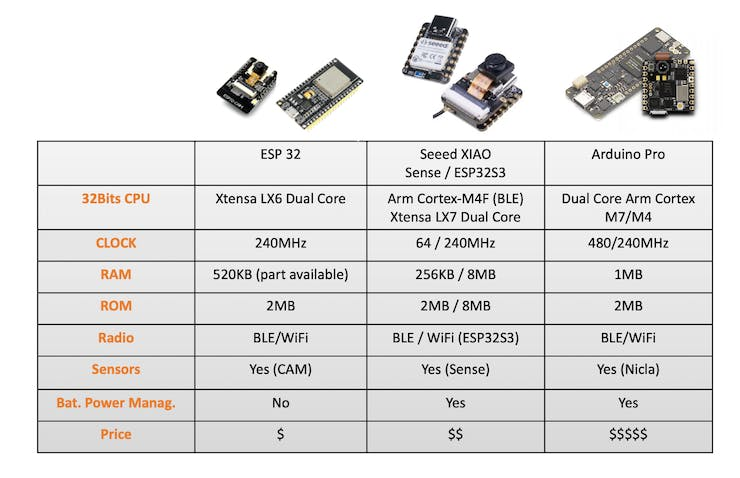
Cogliendo l’occasione, lo stesso modello addestrato è stato distribuito su ESP-CAM, XIAO e Portenta (in questo caso, il modello è stato addestrato di nuovo, utilizzando immagini in scala di grigi per essere compatibile con la sua fotocamera). Ecco il risultato, distribuendo i modelli come Libreria di Arduino:
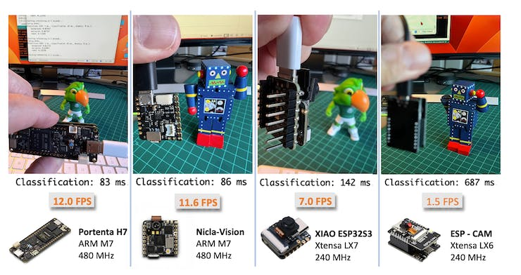
Conclusione
Prima di finire, si tenga presente che la Computer Vision è più di una semplice classificazione delle immagini. Ad esempio, si possono sviluppare progetti Edge Machine Learning sulla visione in diverse aree, come:
Veicoli Autonomi: Usa un gruppo di sensori, i dati lidar e gli algoritmi di visione artificiale per navigare e prendere decisioni.
Sanità: Diagnosi automatizzata di malattie tramite analisi delle immagini di risonanza magnetica, raggi X e TAC
Vendita al Dettaglio: Sistemi di pagamento automatizzati che identificano i prodotti mentre passano attraverso uno scanner.
Sicurezza e Sorveglianza: Riconoscimento facciale, rilevamento di anomalie e tracciamento di oggetti in video in tempo reale.
Realtà Aumentata: Rilevamento e classificazione di oggetti per sovrapporre informazioni digitali al mondo reale.
Automazione Industriale: Ispezione visiva di prodotti, manutenzione predittiva e guida di robot e droni.
Agricoltura; Monitoraggio delle colture basato su droni e raccolta automatizzata.
Elaborazione del Linguaggio Naturale: Didascalie delle immagini e risposte visive alle domande.
Riconoscimento dei Gesti: Per giochi, traduzione del linguaggio dei segni e interazione uomo-macchina.
Raccomandazione dei Contenuti: Sistemi di raccomandazione basati sulle immagini nell’e-commerce.